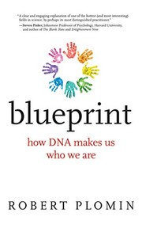

Blueprint: How DNA Makes Us Who We Are
Book·Robert Plomin, 2018·蓝图

The author argues that DNA is the main force shaping who we are. The views are forceful and should be read alongside critics.
- Author
- Robert Plomin
- Year
- 2018
- Difficulty
- Intermediate
- Kind
- Overview
- Schools
- Behavior Genetics
- Core theories
- Three Laws of Behavior Genetics
Editions
- English edition Blueprint: How DNA Makes Us Who We Are Robert Plomin · MIT Press, first edition · 2018 Open Library ↗